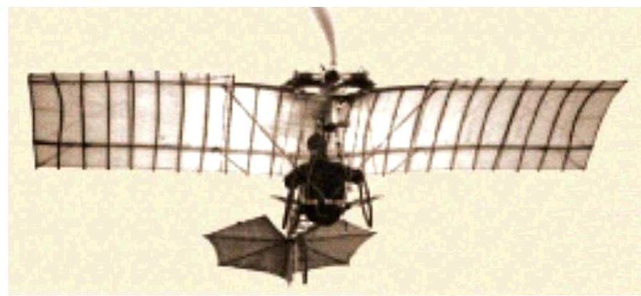

La Demoiselle de Santos-Dumont
[CVs récents]
(J'ai pris quelques illustrations sur des sites du net dont je ne me souviens plus. Qu'ils m'excusent et soient remerciés)
Pour débuter les festivals 2006 et surtout Coulaines, et occuper mon hiver, j'avais dans l'idée de faire un CV reprenant un aéroplane du début de l'aviation. J'ai d'abord réuni un peu de doc sur l'Eole de Clément Ader. Malgré tout mon respect pour cet honorable pionnier, j'en ai conclu :
1) que ça ne ferait jamais un cerf-volant... volant, avec cette forme d'aile très creuse (à se demander comment Ader a pu voler, grâce à l'effet de sol sans doute, mais sans pouvoir rester en l'air).
2) que cette structure d'aile était bien compliquée à réaliser avec l'impératif poétique que s'était donné Ader de pouvoir la replier comme un oiseau...
3) que l'Avion ou l'Eole, avec leurs structures et leur "cabine de plage en toile" carrée étaient finalement historiquement respectables mais bien laids et peu dans l'esprit "oiseau", léger et fluide dans l'air.
Je me suis donc penché sur la Demoiselle de Santos-Dumont, qui m'avait déjà bien plu dans le passé : dimensions réduites, minimum de moyens, mais toute la disposition et les possibilités en devenir d'un avion léger actuel, pilotable via des gouvernes arrières de profondeur et de direction. Et puis je la trouvais belle. J'avais aussi pensé à l'Antoinette, qui n'est pas mal, mais bien postérieure.

La vraie Demoiselle en vol (pilotée par Santos-Dumont ?)...
Notez la simplicité de la structure, juste ce qu'il faut, sans les tubes, les mâts, les haubans ou autres rajoutages sécuritaires des versions ultérieures...

Alors, je suis parti dans les dessins et les plans, on ne trouve pas tellement d'images sur Internet, et elles sont contradictoires. Le fabricant qui a construit en série (petite...) la Demoiselle n'a pas su, au fil des ans, limiter la croissance, passant l'envergure de 5,50 m à 6,35 m, ajoutant de la puissance et tout un bazar de tubes supplémentaires et de haubans rejoignant 2 mâts verticaux, le tout abâtardissant la gracieuse et logique silhouette créée par Santos-Dumont.

Voilà le résultat, sans doute plus sûr et plus résistant, mais plus lourd et plus très attirant... En tout cas, les acheteurs se sont vite détournés de ce bric-à-brac.

Pour donner une idée de la taille, une photo de l'époque où le Musée de l'Air était un entassement dans un hangar à Meudon (j'avais visité, c'était oh combien plus émouvant que les ennuyeux musées "didactiques" actuels, mais passons...). La Demoiselle est le petit truc par terre, en bas et au milieu de la photo !

Bon, vous avez dû comprendre que mon modèle a été la Demoiselle initiale, plus plaisante. Et aussi, j'avoue, plus simple à construire... J'ai voulu du bambou. D'accord, dans les ailes il y a des tubes carbone avec des raccords alu au centre, mais chut ! Bon, le plan j'ai dû le faire moi-même. Tout d'abord je n'en avais pas trouvé, et après recherches soigneuses j'en avais trop, tous différents, selon la version et apparemment l'imagination des dessinateurs, maquettistes ou illustrateurs...
Pour les ailes, j'avais peur que la forte courbure du profil n'entraîne un couple à piquer rédhibitoire pour un cerf-volant. Alors j'ai mis une double courbure créant un profil de type autostable (voir le plan de profil ci-dessus). Ben ça répondait à un problème qui n'existait pas ! Mais on verra ça plus tard...

Pour le bambou, j'en avais un vieux bout qui traînait, très desséché chez moi après avoir séjourné longtemps dehors... Mais le bambou est un matériau qui pardonne beaucoup et garde toujours ses qualités ! Alors j'ai sorti le couteau suisse, bien affûté et j'ai taillé.

D'abord le fuselage, trois longerons en pyramide avec un triangle démontable à l'avant. Bon, j'avais mis le raccord du mauvais côté, mais ça m'a permis de voir le dièdre et la disposition générale pour construire l'aile et ses fixations.

J'ai donc construit un petit bout d'aile prototype. Je ne voulais pas mettre trop de nervures, car c'est un sacré boulot ! Mais avec peu, ça ne ressemblait à rien. Alors, je suis monté à 21 ! Vingt-et-un petits bambous à tailler et à courber à la forme voulue, avec double courbure à l'époque, et vingt-et-un fourreaux à coudre tout au long de l'aile pour les passer. Tout en prévoyant, bien sûr, la fixation au bout de l'aile...

Je me suis donc lancé dans la construction de l'aile, dont la fixation conditionnait beaucoup de chose, mais il fallait bien avoir une base.

Au bout de l'aile, petits fourreaux pour emboîter le tube carbone, mais ça n'allait pas bien : pas facile à monter, il fallait tirer beaucoup, et la poussée sur la latte du bout ne se faisait pas bien. J'ai plus tard supprimé les fourreaux et mis des petits bouts de durit transpercées par la latte du bout.

Voilà donc la demi-aile finie, avec les lattes et les 2 tubes carbone comme longerons d'aile...

Evidemment, ce n'était pas parfait, on ne peut pas penser à tout. Par exemple, quand on met les lattes dans les fourreaux, ça les gonfle et l'aile raccourcit ! Mais il faut bien que les longerons et les lattes se croisent, on ne peut pas les faire se traverser, et ça ne peut pas être nickel !

Pour continuer, j'ai monté les 2 demi-ailes dans le raccord avant, et j'ai tout de suite compris le mauvais positionnement de celui-ci !

Je l'ai refixé sous le longeron et j'ai remonté l'aile, avec son raccord arrière et la fixation de celui-ci. Pas si simple, il fallait que ça puisse se replier avec le fuselage...

J'ai fabriqué pour cela une sorte de béquille double (repliable) qui tenait bien le raccord en hauteur et pas mal en latéral...

Ensuite, je me suis attaqué aux roues : 2 flasques en plastique transparent, coniques, collées sur un bout de tube et entre elles. Petits essais de découpage du plastique et de collage, détermination de la conicité à assurer, formage, étude d'un tronçon de pneu...

Les roues sont dotées ensuite d'un pneu complet en gaine électrique fendue et enserrant la périphérie. Enfin, montées sur un essieu courbé pour respecter le carrossage de la Demoiselle qui peut maintenant se tenir debout...

Restait l'empennage. Je l'ai fait réglable car je ne savais pas quel angle serait nécessaire. Mais j'avais mis des fils trop fins, et les réglages bougeaient facilement, j'ai dû le remonter avec des haubans plus gros. Il est juste emboîté à la pointe du longeron supérieur pour pouvoir être démonté et rangé... J'ai fait aussi une béquille en bambou pour éviter que l'empennage ne touche au sol.

Pour le côté maquette, j'ai aussi construit un moteur, bicylindre à plat, et une hélice... Le moteur comporte une boîte en plastique noir plié (issu d'un cache de pot de fleur...) et deux bouts de canne à pêche noire pour faire les cylindres ! D'accord, ils sont coniques, mais ça ne se voit pas. L'hélice est en bouteille de soda judicieusement découpée et pliée, puis couverte de 3 couches de vernis chêne foncé...

J'ai aussi installé sous les ailes les haubans qui bloquent l'incidence et le vrillage de l'aile, ainsi que son orientation en empêchant le raccord arrière de se déplacer latéralement. Je n'ai pas fait de pilote, ça m'a semblé trop "jouet pour enfant". Je ferai peut-être le siège...

Voilà, elle a fait ses premiers vols chez moi. Vols pas très concluants, d'ailleurs : elle vole bien tant que le vent est assez faible, mais dès qu'il force, elle cabre complètement en détendant la bride arrière et part en tournant, en verrouillage dirait Sylvien...

J'ai quand même pu faire une jolie photo dans le soleil comme Icare. J'ai fini à temps pour la présenter à Coulaines où elle est restée exposée mais a peu volé et avec les mêmes résultats décevants. J'ai essayé divers remèdes, mais comme je ne comprends pas la cause, je ne vois pas trop quoi faire.
Fin du premier épisode, à suivre donc, j'ai encore des choses à raconter, restez branchés !